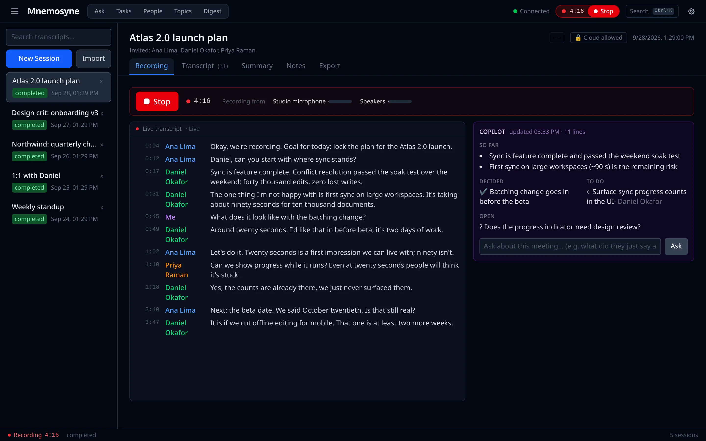
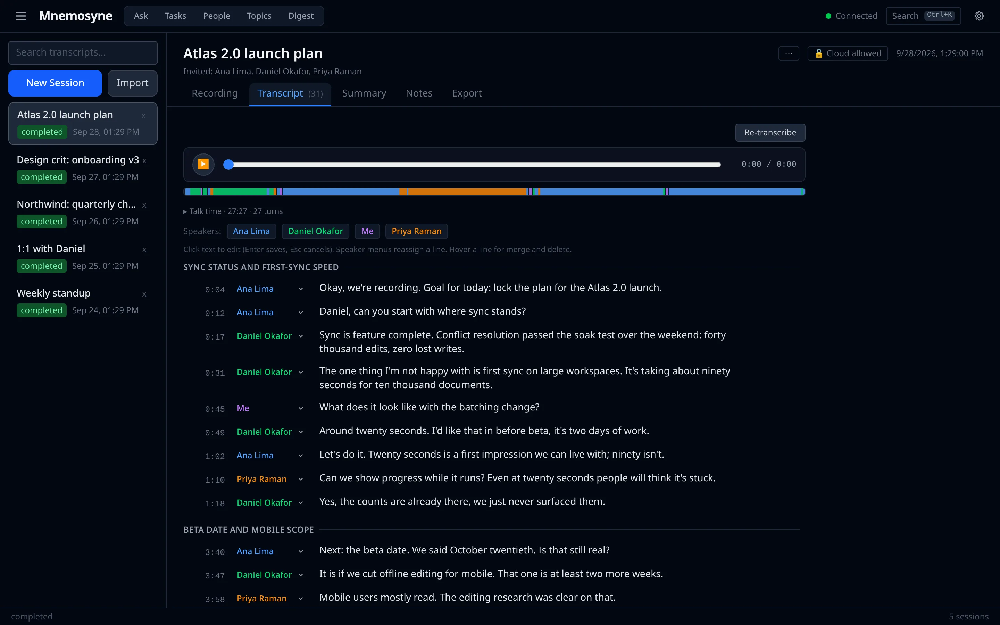
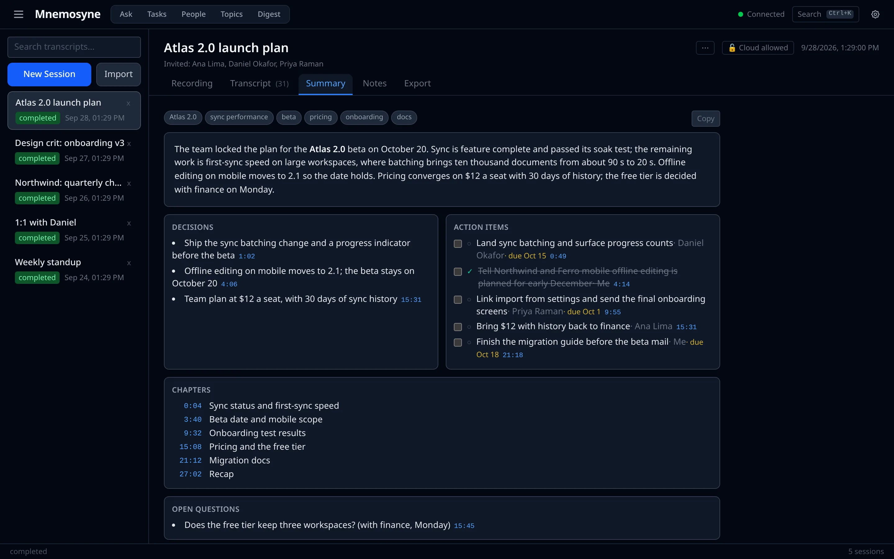
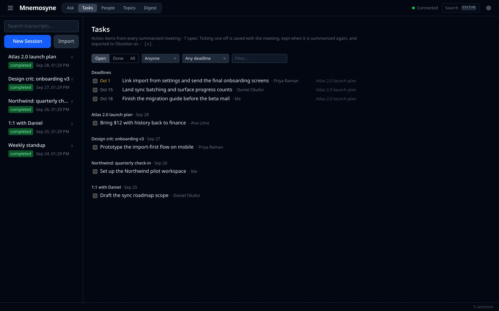

Every meeting, remembered.
Mnemosyne records your calls on Linux, then transcribes them, tells the voices apart and writes up the decisions and tasks, all on your own machine. What was said stays yours: searchable, and in your Obsidian vault.
Free AppImage, deb, rpm, Flatpak No account

Runs on open models, on your hardware
Follow along as it happens.
Your microphone and the call's audio are recorded separately, so your own words are labelled as yours and everyone else is told apart by voice. A live transcript runs a few seconds behind, and a copilot keeps notes as you go.
- People you've named before are recognized on the spot
- Ask "what did she just say about pricing?" mid-meeting
- A notification when your name comes up
- One-click echo cancellation: no headphones needed

The meeting, distilled.
When you stop, the full recording is transcribed and diarized, then summarized: what was decided, who owes what and by when, what's still open, and chapters to jump through. Every item links back to the moment it was said.
- Styles for meetings, standups, 1:1s, interviews and lectures
- Your own glossary, so names and jargon come out right
- A follow-up email drafted from the decisions
- Exported to Obsidian with
[[people]]links and tasks

A memory you can ask.
Every meeting builds on the last. Tasks from all of them in one list, a brief before a recurring meeting of what's still open, people and topics across months, and answers to questions with citations that jump to the exact moment.
- Search by words or by meaning
- A weekly digest of decisions and action items
- Action items to GitHub issues in one click
- An MCP server, so Claude can read your meetings too

Built for people who live in meetings.
The details that make it something you leave running every day.
Ask your meetings Ctrl K
Questions answered from your own transcripts, with numbered citations that open the meeting at that moment.
Speakers that stick
Name a voice once. From then on, that person is labelled in every meeting, even while you're still recording.
Calendar-aware
Recordings are named after the meeting in progress, invitees are offered as speaker names, and it can start on its own. Works with Google Workspace through GNOME Online Accounts.
Record from your phone
An in-person meeting? Pair your phone with a one-time code and its recordings land in the same place.
Tasks across meetings
Every action item in one list with owners and due dates. Tick them off here or in Obsidian.
Nothing lost
A crash mid-meeting? The recording is recovered on the next start and added to its meeting. A source that goes quiet gets flagged right away, and quitting during a recording asks first.
Backups and one meeting from two
Back up everything to one file, restore it on a new computer, and stitch a dropped call and its second half back into one meeting.
What's said in the room stays in the room.
Recording, transcription and speaker identification run on your computer. Summaries use a model you run yourself, unless you choose a cloud one.
Encrypted at rest
Meetings and audio encrypted on disk, the key in your keyring, a recovery code in your hands.
Local-only meetings
Mark a meeting local-only and it is never sent to a cloud model, whatever your settings say.
Names redacted
If you do use a cloud model, people's names can be swapped out before anything leaves.
Works offline
The offline AppImage installs without a network. No account, and nothing of ours in the loop.
Up and running in a minute.
Download, run, and pick your microphone. The first launch sets up the speech models; on a computer with an NVIDIA GPU, GPU support is added on its own.
Does it work on macOS or Windows?
Not today. Mnemosyne records through PipeWire, the Linux audio system, and is built and tested for Linux desktops.
Do I need a GPU?
No. On a CPU, speech is transcribed with NVIDIA's Parakeet model through ONNX. With an NVIDIA GPU, WhisperX and Nemotron diarization are used and a long meeting takes seconds.
Where are my meetings stored?
In a folder in your home directory, encrypted if you turn that on. Summaries and notes can also be exported as Markdown to your Obsidian vault, and a backup is a single file you can keep anywhere.
Which language models can it use?
Anything served by Ollama or vLLM (on your own machine or a server on your network), or OpenAI and Anthropic if you give it a key. You choose per meeting whether cloud models are allowed.
Can the people in the call tell I'm recording?
Mnemosyne records what your computer hears, like any recorder. Please follow the law where you are and tell people when you record them.